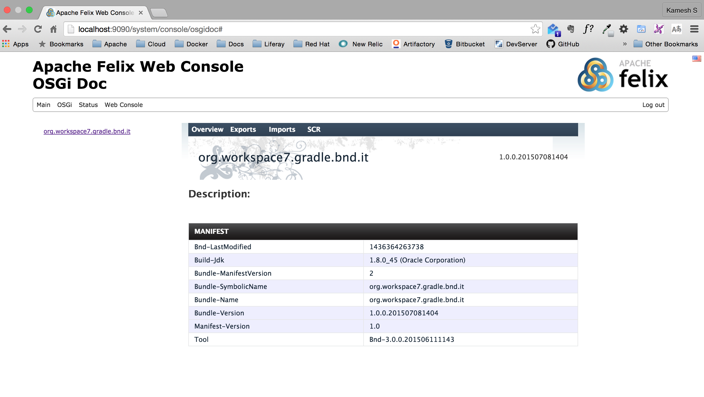
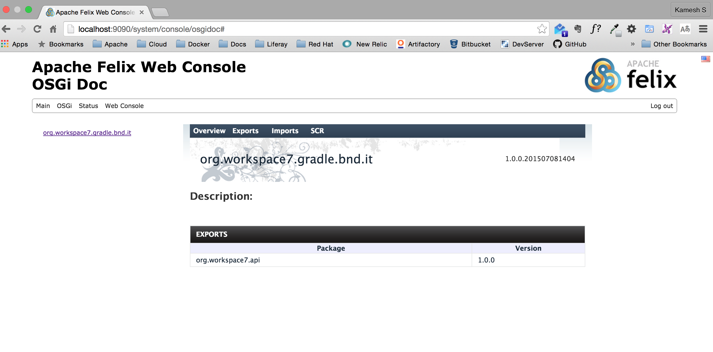
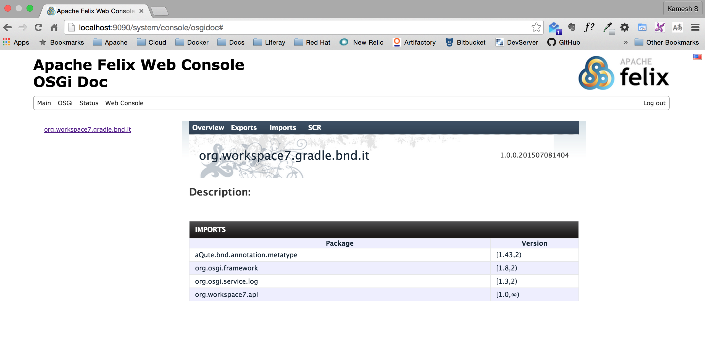
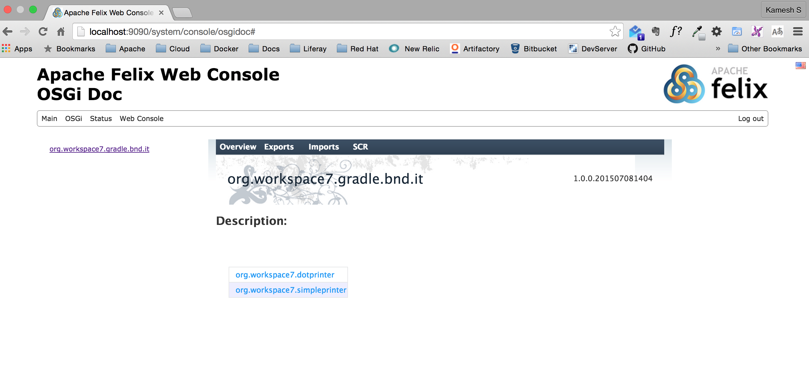
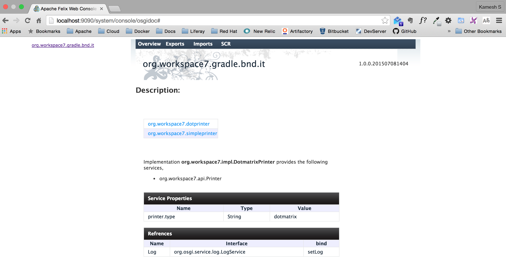
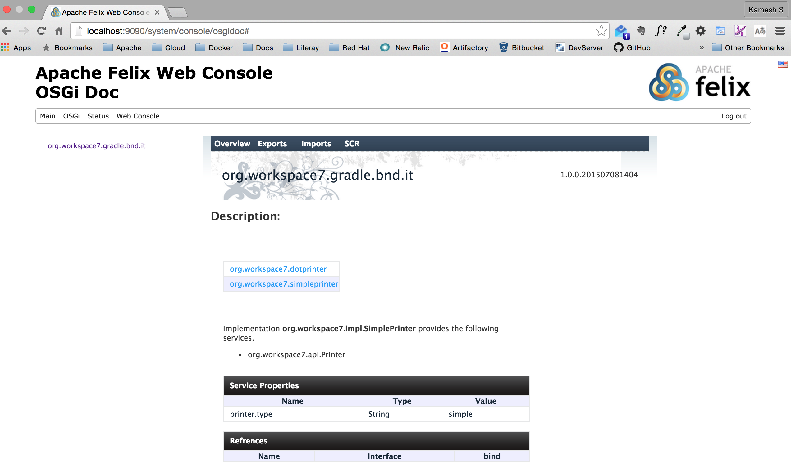

OSGiDoc(WIP)
OSGiDoc is documentation utility that helps generating a html based documentation for OSGi bundles. This serves as first step words building a formal RFP to the OSGi Alliance on defining the documentation as part of the OSGi specification.
What is this repository for?
- The OSGiDoc tool has two main parts,
** A Gradle plugin that wrapped around the
bndgradle plugin in generating the documentation on top of the generatedbndbundle jar ** A Felix WebConsole plugin that helps in viewing the documentation using Felix WebConsole - Version
Sample Screenshots of generated Documentation
     
How do I get set up?
- Summary of set up
- Configuration
- Dependencies
- Database configuration
- How to run tests
- Deployment instructions